<!DOCTYPE html
  PUBLIC "-//W3C//DTD XHTML 1.0 Strict//EN">
<html xmlns:mwsh="http://www.mathworks.com/namespace/mcode/v1/syntaxhighlight.dtd">
   <head>
      <meta http-equiv="Content-Type" content="text/html; charset=utf-8">
   
      <!--
This HTML is auto-generated from an M-file.
To make changes, update the M-file and republish this document.
      -->
      <title>Toolbox Sparsity - A toolbox for sparse coding and sparse regularization</title>
      <meta name="generator" content="MATLAB 7.4">
      <meta name="date" content="2008-08-29">
      <meta name="m-file" content="content">
      <LINK REL="stylesheet" HREF="style.css" TYPE="text/css">
   </head>
   <body>
      <div class="content">
         <h1>Toolbox Sparsity - A toolbox for sparse coding and sparse regularization</h1>
         <introduction>
            <p>Copyright (c) 2008 Gabriel Peyre</p>
         </introduction>
         <h2>Contents</h2>
         <div>
            <ul>
               <li><a href="#3">Overview</a></li>
               <li><a href="#13">Compressed sensing of exactely sparse signals with Fourier measurements.</a></li>
               <li><a href="#21">Compressed sensing of noisy approximately sparse signals with Gaussian measurements.</a></li>
               <li><a href="#28">Tomography inversion of an image with TV regularization.</a></li>
               <li><a href="#36">Sparse spikes deconvolution with L1 regularization and Matching Pursuit</a></li>
               <li><a href="#46">Image inpainting with sparse wavelets regularization</a></li>
            </ul>
         </div>
         <p>The toolbox can be downloaded from Matlab Central <a href="http://www.mathworks.com/matlabcentral/fileexchange/loadFile.do?objectId=16204&amp;objectType=FILE">http://www.mathworks.com/matlabcentral/fileexchange/loadFile.do?objectId=16204&amp;objectType=FILE</a></p>
         <p>We first includes in the path some additional useful scripts.</p><pre class="codeinput">path(path, <span class="string">'toolbox/'</span>);
</pre><h2>Overview<a name="3"></a></h2>
         <p>This toolbox implements several algorithms to compute sparse expansion in redundant dictionaries and to solve inverse problems
            with sparse regularization (and also TV regularization).
         </p>
         <p>Sparse expansion of a signal <tt>f</tt> of size <tt>n</tt> in a redundant dictionary <tt>D</tt> (which is a matrix of size <tt>n x p</tt> with <tt>p&gt;n</tt>, or an implicit operator) corresponds to the computation of coefficients <tt>x</tt> of size <tt>p</tt> such that <tt>f=D*x</tt> (or approximate equality <tt>norm(y-D*x)&lt;epsilon</tt>). Since many <tt>x</tt> are possible, one can assume that <tt>x</tt> is sparse, for instance supposing that it as a small L1 norm <tt>sum(abs(x))</tt>. This can be achieved by Lagrangian optimization
         </p>
         <p><tt>min_x 1/2*norm(f-D*x)^2 + T*sum(abs(x))</tt>  (1)
         </p>
         <p>where <tt>T</tt> is increased if <tt>epsilon</tt> is increased.
         </p>
         <p>Sparse regularization for the resolution of <tt>y=U*f + noise</tt> (where <tt>U</tt> is a rank defficientis equivalent) corresponds to the computation of a solution <tt>f</tt> that is sparse in a dictionary <tt>D</tt>, thus being <tt>f=D*x</tt> with small L1 norm. This is performed by solving
         </p>
         <p><tt>min_x 1/2*norm(y-U*D*x)^2 + T*sum(abs(x))</tt>   (2)
         </p>
         <p>And the solution is computed from the optimal coefficients <tt>x</tt> as <tt>f=D*x</tt>.
         </p>
         <p>Problems (1) and (2) are equivalent if one replace the dictionary <tt>D</tt> of (1) by the transformed dictionary <tt>U*D</tt> in (2). One can thus use the same software to solve both (2) and (1)
         </p>
         <p>TV regularization corresponds to replacing (2) by</p>
         <p><tt>min_f 1/2*norm(y-U*f)^2 + T*TV(f)</tt>   (3)
         </p>
         <p>where <tt>TV(f)</tt> is the discrete TV norm of the signal/image <tt>f</tt>. Intuitively, this corresponds to assuming that the gradient of <tt>f</tt> is sparse, so (3) is quite close to (2) if <tt>D</tt> is chosen a translation invariant Haar wavelet dictionary. But (3) and (2) necessitate slightly different algorithms.
         </p>
         <div>
            <ul>
               <li>To solve (1) or (2) with <tt>epsilon=0</tt> (no noise), which corresponds to the minimum L1 norm solution to <tt>f=D*x</tt> or <tt>y=U*D*x</tt>, this toolbox implements the Douglas-Rachford iterative algorithm.
               </li>
               <li>To solve (1) or (2), this toolbox implements the iterative soft thresholding algorithm. If <tt>T</tt> is not known but <tt>epsilon</tt> is known, then the implementation automatically computes the correct <tt>T</tt> during the iterations.
               </li>
               <li>To solve (3), this toolbox implements Chambolle's JMIV 2002 algorithm. If <tt>T</tt> is not known but <tt>epsilon</tt> is known, then the implementation automatically computes the correct <tt>T</tt> during the iterations.
               </li>
            </ul>
         </div>
         <h2>Compressed sensing of exactely sparse signals with Fourier measurements.<a name="13"></a></h2>
         <p>First, we create an s-sparse signal with random spikes location and random coefficients values.</p><pre class="codeinput"><span class="comment">% dimensionality</span>
n = 1024;
<span class="comment">% sparsity</span>
s = 25;
<span class="comment">% generate random spikes</span>
x0 = compute_rand_sparse(n, s, <span class="string">'uniform'</span>);
</pre><p>We select an operator U, which is a pre-defined implicit operator. This is done by filling in a structure <tt>options</tt> with the correct parameter. Many other measurement matrices are available for Compressive Sensing (Gaussian, Bernouilli,
            Fourier, Sinus, Hadamard, etc).
         </p><pre class="codeinput"><span class="comment">% number of measurements</span>
p = 100;
<span class="comment">% type of matrix</span>
clear <span class="string">options</span>;
options.cs_type = <span class="string">'fourier'</span>;
options.n = n;
options.p = p;
</pre><p>We perform the measurements (without noise) by applying the sensing operator.</p><pre class="codeinput">y = callback_sensing_rand(x0, +1, options);
</pre><p>We can display the signal vector and the measurements</p><pre class="codeinput">clf;
subplot(2,1,1);
plot_sparse_diracs(x); title(<span class="string">'Signal x_0'</span>);
subplot(2,1,2);
h = plot(real(y)); axis <span class="string">tight</span>;
set(h, <span class="string">'LineWidth'</span>, 2);
set(gca, <span class="string">'FontSize'</span>, 20);
title(<span class="string">'Measurements y=U*x_0'</span>);
</pre>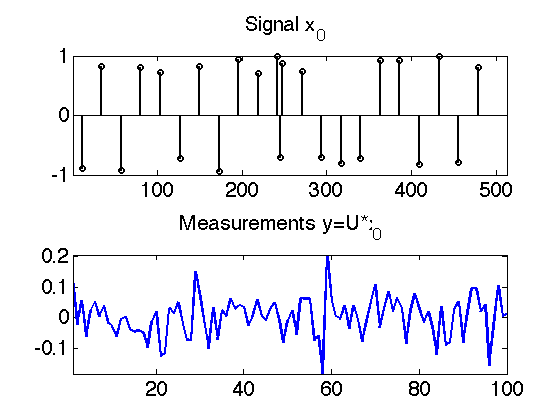 <p>Since there is no noise, the recovery can be performed using Douglas-Rachford algorithm. Special thanks to Jalal Fadili for
            his help on this algorithm.
         </p><pre class="codeinput"><span class="comment">% set to 1 these options if you want cool displays</span>
options.verb = 0;
options.draw_iter = 0;
<span class="comment">% parameter of the algorithm</span>
options.niter = 3000;
options.x = zeros(n,1);
[xlun,lun] = perform_douglas_rachford(@callback_sensing_rand, y, options);
xlun = real(xlun);
</pre><p>We can display the result. This is a case of perfect recovery, <tt>xlun=x0</tt>! However, if you increase slightly the value of <tt>s</tt>, the the recovery fails ...
         </p><pre class="codeinput">clf;
options.title = {<span class="string">'Signal'</span> <span class="string">'Recovery'</span>};
options.val = .01; <span class="comment">% remove small residual</span>
plot_sparse_diracs({x0 xlun}, options);
</pre>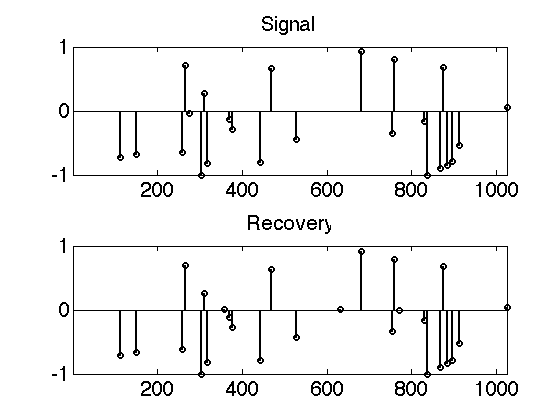 <p>We can also display the decrease of the L1 norm of the solution during the iterations, to check that the algorithm really
            does a good job.
         </p><pre class="codeinput">clf;
h = plot(lun); axis <span class="string">tight</span>;
set(h, <span class="string">'LineWidth'</span>, 2);
set(gca, <span class="string">'FontSize'</span>, 20);
xlabel(<span class="string">'#iteration'</span>); ylabel(<span class="string">'L_1 norm |x|_1'</span>);
</pre>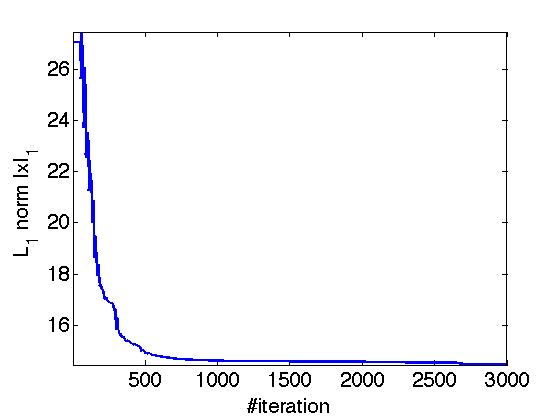 <h2>Compressed sensing of noisy approximately sparse signals with Gaussian measurements.<a name="21"></a></h2>
         <p>To be more robust to noise, we need to decrease the number of measurements. Also, we are going to use Gaussian real measurements,
            which in fact performs twice less measurements than complex Fourier measurements.
         </p><pre class="codeinput"><span class="comment">% sparsity</span>
s = 20;
<span class="comment">% generate random spikes</span>
x0 = compute_rand_sparse(n, s, <span class="string">'uniform'</span>);
</pre><p>A more realistic setting is to have some noise in the measurements. We also select an other kind of matrix, given in explicit
            form (an array of double). This is possible only for small size problems.
         </p><pre class="codeinput"><span class="comment">% Generate a matrix for sensing</span>
U = randn(p,n);
<span class="comment">% noiseless measurements</span>
y = U*x0;
<span class="comment">% make some noise</span>
sigma = .06*std(y(:)); <span class="comment">% noise level</span>
y = y + sigma*randn(size(y));
</pre><p>Since there is some noise, we need to use iterative thresholding. The regularization parameter is adapted automatically to
            fit the noise level <tt>sigma</tt></p><pre class="codeinput"><span class="comment">% amplification is &gt;1 to further sparsify the solution</span>
amplification = 2;
<span class="comment">% norm of the noise |epsilon|</span>
options.etgt = amplification * sigma*sqrt(p);
<span class="comment">% initial regularization parameter</span>
options.T = 1;
<span class="comment">% perform iterative thresholding</span>
options.niter = 4000;
[xlun,err,lun,lambda] = perform_iterative_thresholding( U,y,options);
</pre><p>We can display the evolution of the threshold lambda during the iteration and also display the decay of the Lagrangian to
            see what the algorithm is doing.
         </p><pre class="codeinput">clf;
subplot(2,1,1);
h = plot(lambda); axis <span class="string">tight</span>;
set(h, <span class="string">'LineWidth'</span>, 2);
set(gca, <span class="string">'FontSize'</span>, 20);
title(<span class="string">'Evolution of \lambda'</span>);
subplot(2,1,2);
lagr = .5*err.^2 + lambda(end)*lun;
h = plot(lagr); axis <span class="string">tight</span>;
set(h, <span class="string">'LineWidth'</span>, 2);
set(gca, <span class="string">'FontSize'</span>, 20);
title(<span class="string">'Evolution of |y-U x|^2+\lambda |x|_1'</span>);
axis([1 options.niter min(lagr) min(lagr)*1.5]);
</pre>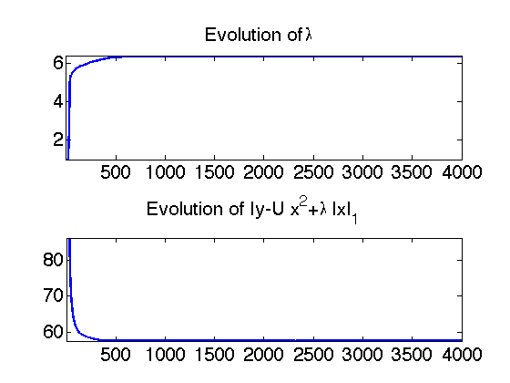 <p>The solution of the L1 minimization is biased, because L1 tends to under-estimate the value of the true coefficients (this
            is very much similar to the issues with soft thresholding). To remediate to this issue, it is possible to "debiased" the solution
            by extracting the support and then performing an L2 best fit (which is not biased) of the measurements. Be aware that this
            might give very bad result if the support is baddly estimated.
         </p><pre class="codeinput"><span class="comment">% remove small amplitude coefficients because they are not very reliable</span>
xdeb = xlun .* (abs(xlun)&gt;.05);
<span class="comment">% perform L2 regression</span>
xdeb = perform_debiasing(U,xdeb,y);
</pre><p>We can display the result. There is no more perfect recovery because of the noise, but the solution is close to the original
            signal.
         </p><pre class="codeinput">clf;
options.title = {<span class="string">'Signal'</span> <span class="string">'Recovery'</span> <span class="string">'Debiased'</span>};
options.val = .01; <span class="comment">% remove small residual</span>
plot_sparse_diracs({x0 xlun xdeb}, options);
</pre>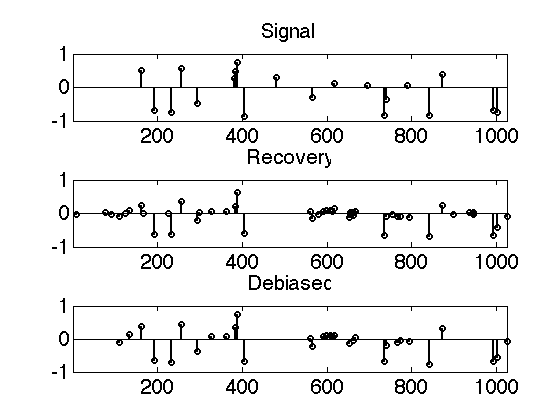 <h2>Tomography inversion of an image with TV regularization.<a name="28"></a></h2>
         <p>We can recover from partial Fourier measurement using TV regularization. We add some noise to the measurement, and perform
            the recovery using Chambolle's algorithm for TV regularization.
         </p>
         <p>First we load the image.</p><pre class="codeinput">name = <span class="string">'phantom'</span>;
n = 256;
M = load_image(name, n);
M = rescale(M,.05,.95);
</pre><p>Then we load the tomography mask.</p><pre class="codeinput">nrays = 18; <span class="comment">% Candes/Romberg/Tao set up</span>
mask = compute_tomography_mask(n,nrays);
<span class="comment">% number of measurements</span>
p = sum(mask(:)==1);
<span class="comment">% display</span>
imageplot({M mask}, {<span class="string">'Signal'</span> <span class="string">'Frequencies'</span>});
</pre>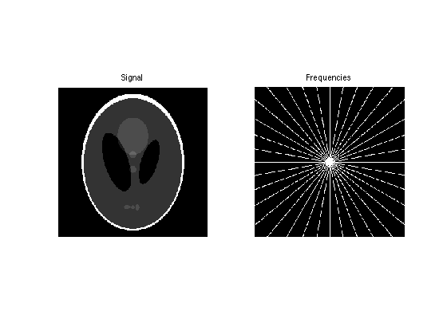 <p>We set up options for the tomography operator (sub-sampling of the frequencies) and perform measurements.</p><pre class="codeinput">options.size = size(M);
options.mask = mask;
y = callback_tomography(M,+1,options);
<span class="comment">% add some noise</span>
sigma = .01*std(y(:));
y = y + sigma*randn(size(y));
</pre><p>We can perform L2 pseudo-inversion (zero padding in Fourier) by just applying the transpose operator.</p><pre class="codeinput">M2 = callback_tomography(y,-1,options); M2 = real(M2);
imageplot({M clamp(M2)}, {<span class="string">'Original'</span> <span class="string">'L2 inversion'</span>});
</pre>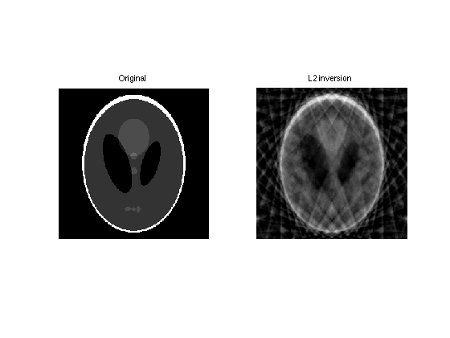 <p>We can perform inversion with TV regularization.</p><pre class="codeinput"><span class="comment">% set up parameter for the regularization</span>
options.TVoperator = @callback_tomography;
options.TVrhs = y;
options.etgt = 4*sigma*sqrt(p); <span class="comment">% target noise level</span>
options.niter = 300;
options.niter_inner = 30; <span class="comment">% iteration for inner loop of Chambolle's algorithm.</span>
options.tol = 1e-4;
options.display = 0; <span class="comment">% set to 1 for sexy display</span>
options.verb = 0;
options.tau = 1/8;
<span class="comment">% perform the regularization</span>
[Mtv,err,tv,lambda] = perform_tv_denoising(zeros(n),options);
</pre><p>We can display the results.</p><pre class="codeinput">clf;
imageplot({M clamp(Mtv)}, {<span class="string">'Original'</span> <span class="string">'Recovery'</span>});
</pre>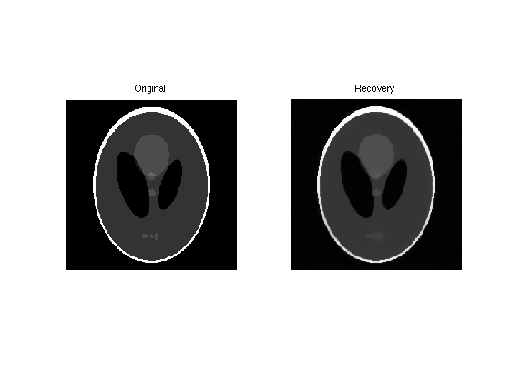 <p>We can display the evolution of the regularization parameter and the TV energy.</p><pre class="codeinput">clf;
subplot(2,1,1);
h = plot(lambda); axis <span class="string">tight</span>;
set(h, <span class="string">'LineWidth'</span>, 2);
set(gca, <span class="string">'FontSize'</span>, 20);
title(<span class="string">'Evolution of \lambda'</span>);
subplot(2,1,2);
lagr = .5*err.^2 + lambda(end)*tv;
h = plot(lagr); axis <span class="string">tight</span>;
set(h, <span class="string">'LineWidth'</span>, 2);
set(gca, <span class="string">'FontSize'</span>, 20);
title(<span class="string">'Evolution of |y-U x|^2+\lambda |x|_1'</span>);
axis([1 options.niter min(lagr) min(lagr)*1.5]);
</pre>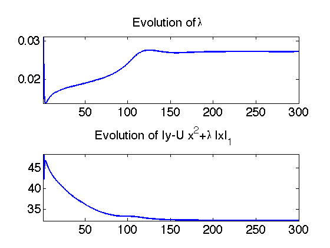 <h2>Sparse spikes deconvolution with L1 regularization and Matching Pursuit<a name="36"></a></h2>
         <p>sparse spikes deconvolution corresponds to inverting a band pass filter. This is very much used in seismic imaging where the
            filter is called a wavelet. Since the signal (reflecticity of the ground) is composed of isolated spikes, one uses L1 minimisation
            in the diract basis to recover the signal. This can also be performed by other sparse optimization technics such as greedy
            matching pursuit. Note that the operator <tt>U</tt> is equal to the dictionary <tt>D</tt> in this case, and is composed of translated copy of the filter. Since this results in a highly ill posed operator, one needs
            to sub-sample the dictionary a little.
         </p>
         <p>First we load a filter which is a second derivative of a Gaussian</p><pre class="codeinput">clear <span class="string">options</span>;
n = 1024;
options.sigma = .02;
h = compute_sparse_spike_filter(<span class="string">'dergauss'</span>,n,options);
h = h/max(h);
</pre><p>We can display the filter and its fourier transform (to see how much frequencies are removed by the filtering).</p><pre class="codeinput">hf = real(fft(h)); hf = hf / max(hf);
clf;
subplot(2,1,1);
hh = plot(fftshift(h)); axis <span class="string">tight</span>;
set(hh, <span class="string">'LineWidth'</span>, 2);
set(gca, <span class="string">'FontSize'</span>, 20);
title(<span class="string">'Filter'</span>);
subplot(2,1,2);
hh = plot(fftshift(hf)); axis <span class="string">tight</span>;
set(hh, <span class="string">'LineWidth'</span>, 2);
set(gca, <span class="string">'FontSize'</span>, 20);
title(<span class="string">'Fourier Transform'</span>);
</pre>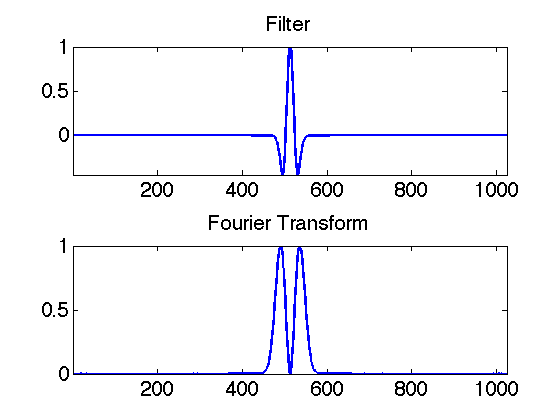 <p>Then we build a dictionary of sub-sampled translated copies of <tt>h</tt>.
         </p><pre class="codeinput">q = 2; <span class="comment">% sub-sampling (distance between wavelets)</span>
p = n/q;
[Y,X] = meshgrid(1:q:n,1:n);
D = h(mod(X-Y,n)+1);
</pre><p>We can display a sub-set of elements of the dictionary.</p><pre class="codeinput">clf;
sel = round( linspace(1,p,5) ); sel(end) = [];
hh = plot(D(:,sel)); axis <span class="string">tight</span>;
set(hh, <span class="string">'LineWidth'</span>, 2);
set(gca, <span class="string">'FontSize'</span>, 20);
title(<span class="string">'Translated wavelets'</span>);
</pre>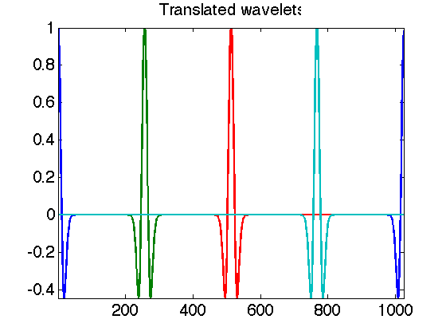 <p>Joel Tropp and Jean-Jacques Fuchs have derived in several IEEE Tr. Info. Theory papers some powerfull bounds of the recovery
            of signals with L1 minimization. This includes the Fuchs, ERC and WERC criterions. We display here these three criterions
            to see wether a Dirac spikes train of spacing <tt>Delta</tt> between two consecutive spikes can be recovered stably by both matching pursuit and L1 minimization (basis pursuit). The
            dashed vertical lines display the critical spacing as detected by these three criterions.
         </p><pre class="codeinput">options.display = 1;
options.delta_max = 100;
options.verb = 0;
[minscale,crit,lgd] = compute_minimum_scale(D, options);
set(gca, <span class="string">'FontSize'</span>, 20);
xlabel(<span class="string">'\Delta'</span>);
</pre>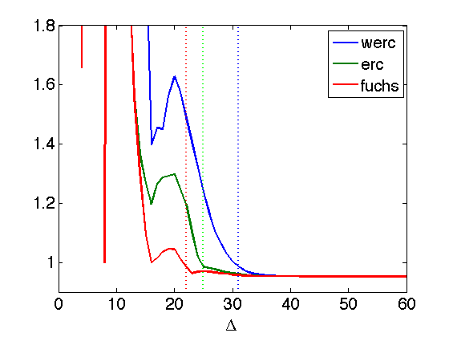 <p>We create a sparse spikes train, with a default in the middle (two close spikes).</p><pre class="codeinput">options.delta = 23; <span class="comment">% regular spacing</span>
options.delta0 = 3; <span class="comment">% create default that is not recovered by BP</span>
x = compute_rand_sparse(p, 0, <span class="string">'seismic'</span>, options);
</pre><p>The signal is the convolution with the filters plus noise.</p><pre class="codeinput">sigma = .03;
y = D*x + randn(n,1)*sigma;
<span class="comment">% display</span>
clf;
subplot(2,1,1);
plot_sparse_diracs(x);
title(<span class="string">'Sparse spikes x'</span>);
subplot(2,1,2);
hh = plot(y); axis <span class="string">tight</span>;
set(hh, <span class="string">'LineWidth'</span>, 2);
set(gca, <span class="string">'FontSize'</span>, 20);
title(<span class="string">'Signal y=Dx+w'</span>);
</pre>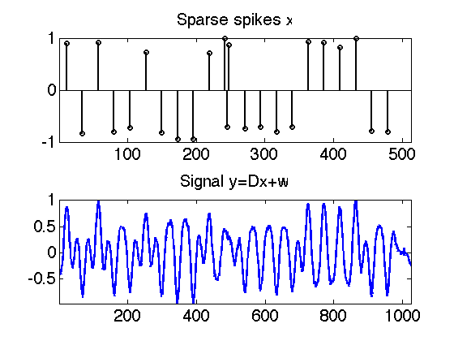 <p>We can recover the signal using L1 minimisation plus debiasing.</p><pre class="codeinput">options.T = 1;
options.niter = 1000;
options.etgt = 5*sigma*sqrt(n); <span class="comment">% noise level</span>
options.x = zeros(p,1); <span class="comment">% initial solution</span>
[xlun,err,lun,Tlist]  = perform_iterative_thresholding(D,y,options);
<span class="comment">% perform debiasins</span>
xlun(abs(xlun)&lt;.08)=0;
xdeb = perform_debiasing(D,xlun,y);
<span class="comment">% display</span>
options.title = {<span class="string">'Signal'</span> <span class="string">'L1'</span> <span class="string">'Debiased'</span>};
plot_sparse_diracs({x xlun xdeb}, options);
</pre>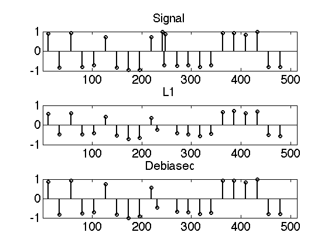 <p>Another way to solve the problem is using greedy matching pursuit procedure. Most of the time, it give result comparable or
            a little worse than basis pursuit, but it is faster. Here, we are in a critical set up where basis pursuit performs better
            than matching pursuit.
         </p><pre class="codeinput"><span class="comment">% parameters for the pursuits</span>
options.tol = 3*norm(w)/norm(y);
options.nbr_max_atoms = 80;
xmp = perform_mp(D,y,options);
xomp = perform_omp(D,y,options);
<span class="comment">% display</span>
options.title = {<span class="string">'Signal'</span> <span class="string">'Matching pursuit'</span> <span class="string">'Orthogonal Matching Pursuit'</span>};
plot_sparse_diracs({x xmp xomp}, options);
</pre>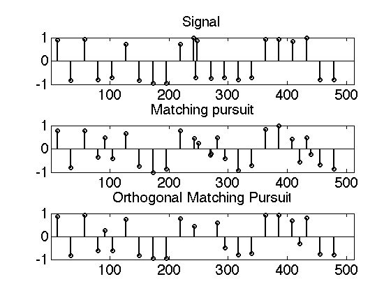 <h2>Image inpainting with sparse wavelets regularization<a name="46"></a></h2>
         <p>Image inpainting consists in filling missing pixels in an image. This correspond to a diagonal operator <tt>U</tt> with 0 and 1 on the diagonal (0 indicating missing pixels). This can be regularized using iterative thresholding. Since there
            is no noise, we want to use a very low threshold. This can be achieved by decaying the threshold during the iteration, and
            corresponds to the Morphological Component Analysis strategy of Jean-Luc Starck, Miki Elad and David Donoho.
         </p>
         <p>First we load an image and a mask</p><pre class="codeinput">clear <span class="string">options</span>;
n = 128;
M = load_image(<span class="string">'lena'</span>);
M = rescale( crop(M,n) );
options.rho = .7; <span class="comment">% remove 80% of pixels</span>
mask = compute_inpainting_mask(<span class="string">'rand'</span>,n,options);
options.mask = mask;
</pre><p>Apply the operator to remove pixels</p><pre class="codeinput">y = callback_inpainting(M, +1, options);
imageplot({M y}, {<span class="string">'Image to inpaint'</span> <span class="string">'Data to inpaint'</span>});
</pre>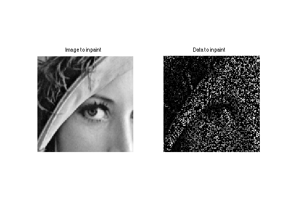 <p>Perform the inpainting using sparse wavelet expansion</p><pre class="codeinput"><span class="comment">% set up decaying thresholding</span>
options.thresh = <span class="string">'soft'</span>;
options.Tmax = .1;
options.Tmin = 0;
options.niter = 200;
options.tau = 1;
options.drawiter = 0;
<span class="comment">% set up the translation invariant wavelet dictionary</span>
options.Jmin = 4;
options.wavelet_type = <span class="string">'biorthogonal'</span>;
options.wavelet_vm = 3;
options.D = @callback_atrou;
<span class="comment">% do the resolution</span>
[MW,err,lun,Tlist] = perform_iterative_thresholding(@callback_inpainting, y, options);
<span class="comment">% retrieve the image from its coefficients</span>
Mlun = callback_atrou(MW, +1, options);
</pre><pre class="codeoutput">[....................][*...................][**..................][***.................][****................][*****...............][******..............][*******.............][********............][*********...........][**********..........][***********.........][************........][*************.......][**************......][***************.....][****************....][*****************...][******************..][*******************.][********************]
</pre><p>Display the result</p><pre class="codeinput">imageplot({M clamp(Mlun)},{<span class="string">'Original'</span> <span class="string">'Recovered'</span>});
</pre>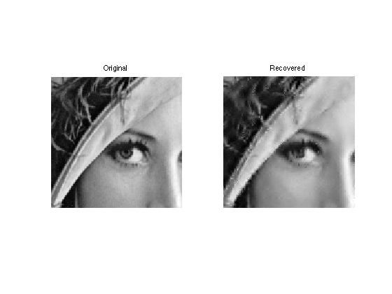 <p class="footer"><br>
            Copyright  &reg; 2008 Gabriel Peyre<br></p>
      </div>
      <!--
##### SOURCE BEGIN #####
%% Toolbox Sparsity - A toolbox for sparse coding and sparse regularization
%
% Copyright (c) 2008 Gabriel Peyre
%

%% 
% The toolbox can be downloaded from Matlab Central
% http://www.mathworks.com/matlabcentral/fileexchange/loadFile.do?objectId=16204&objectType=FILE

%%
% We first includes in the path some additional useful scripts.
path(path, 'toolbox/');

%% Overview
% 
% This toolbox implements several algorithms to compute sparse expansion in redundant dictionaries and to solve inverse problems with sparse regularization 
% (and also TV regularization). 
%

%% 
% Sparse expansion of a signal |f| of size |n| in a redundant dictionary |D| (which is a matrix of size |n x p| with |p>n|, or an implicit operator)
% corresponds to the computation of coefficients |x| of size |p| such that |f=D*x| (or approximate equality |norm(y-D*x)<epsilon|). Since many |x| are possible, one 
% can assume that |x| is sparse, for instance supposing that it as a small L1 norm |sum(abs(x))|. This can be achieved by Lagrangian optimization
%

%%
% |min_x 1/2*norm(f-D*x)^2 + T*sum(abs(x))|  (1)

%%
% where |T| is increased if |epsilon| is increased. 

%%
% Sparse regularization for the resolution of |y=U*f + noise| (where |U| is a rank defficientis equivalent) corresponds to the computation of a solution 
% |f| that is sparse in a dictionary |D|, thus being |f=D*x| with small L1 norm. This is performed by solving

%%
% |min_x 1/2*norm(y-U*D*x)^2 + T*sum(abs(x))|   (2)

%%
% And the solution is computed from the optimal coefficients |x| as |f=D*x|.
%
% Problems (1) and (2) are equivalent if one replace the dictionary |D| of (1) by the transformed dictionary |U*D| in (2). One can thus use the same 
% software to solve both (2) and (1)

%%
% TV regularization corresponds to replacing (2) by 

%%
% |min_f 1/2*norm(y-U*f)^2 + T*TV(f)|   (3)
%
% where |TV(f)| is the discrete TV norm of the signal/image |f|. Intuitively, this corresponds to assuming that the gradient of |f| is sparse, so (3) is 
% quite close to (2) if |D| is chosen a translation invariant Haar wavelet dictionary. But (3) and (2) necessitate slightly different algorithms.

%%
% 
% * To solve (1) or (2) with |epsilon=0| (no noise), which corresponds to the minimum L1 norm solution to |f=D*x| or |y=U*D*x|, this toolbox implements the Douglas-Rachford iterative algorithm.
% * To solve (1) or (2), this toolbox implements the iterative soft thresholding algorithm. If |T| is not known but |epsilon| is known, then the implementation automatically computes the correct |T| during the iterations.
% * To solve (3), this toolbox implements Chambolle's JMIV 2002 algorithm. If |T| is not known but |epsilon| is known, then the implementation automatically computes the correct |T| during the iterations.

%% Compressed sensing of exactely sparse signals with Fourier measurements.

%% 
% First, we create an s-sparse signal with random spikes location and
% random coefficients values.

% dimensionality
n = 1024;
% sparsity
s = 25; 
% generate random spikes
x0 = compute_rand_sparse(n, s, 'uniform');

%%
% We select an operator U, which is a pre-defined implicit operator.
% This is done by filling in a structure |options| with the correct
% parameter. Many other measurement matrices are available for Compressive
% Sensing (Gaussian, Bernouilli, Fourier, Sinus, Hadamard, etc).

% number of measurements
p = 100;
% type of matrix
clear options;
options.cs_type = 'fourier';
options.n = n;
options.p = p;

%% 
% We perform the measurements (without noise) by applying the sensing
% operator.

y = callback_sensing_rand(x0, +1, options);


%%
% We can display the signal vector and the measurements

clf;
subplot(2,1,1);
plot_sparse_diracs(x); title('Signal x_0');
subplot(2,1,2);
h = plot(real(y)); axis tight;
set(h, 'LineWidth', 2); 
set(gca, 'FontSize', 20);
title('Measurements y=U*x_0');

%%
% Since there is no noise, the recovery can be performed using
% Douglas-Rachford algorithm. Special thanks to Jalal Fadili for his help
% on this algorithm. 

% set to 1 these options if you want cool displays
options.verb = 0;
options.draw_iter = 0;
% parameter of the algorithm
options.niter = 3000;
options.x = zeros(n,1);
[xlun,lun] = perform_douglas_rachford(@callback_sensing_rand, y, options);
xlun = real(xlun);

%%
% We can display the result. This is a case of perfect recovery, |xlun=x0|!
% However, if you increase slightly the value of |s|, the the recovery
% fails ...

clf;
options.title = {'Signal' 'Recovery'};
options.val = .01; % remove small residual
plot_sparse_diracs({x0 xlun}, options);

%%
% We can also display the decrease of the L1 norm of the solution during
% the iterations, to check that the algorithm really does a good job.

clf;
h = plot(lun); axis tight;
set(h, 'LineWidth', 2);
set(gca, 'FontSize', 20);
xlabel('#iteration'); ylabel('L_1 norm |x|_1');

%% Compressed sensing of noisy approximately sparse signals with Gaussian measurements.

%%
% To be more robust to noise, we need to decrease the number of
% measurements. Also, we are going to use Gaussian real measurements, which
% in fact performs twice less measurements than complex Fourier
% measurements.

% sparsity
s = 20; 
% generate random spikes
x0 = compute_rand_sparse(n, s, 'uniform');

%% 
% A more realistic setting is to have some noise in the measurements.
% We also select an other kind of matrix, given in explicit form (an array
% of double). This is possible only for small size problems.

% Generate a matrix for sensing
U = randn(p,n);
% noiseless measurements
y = U*x0;
% make some noise
sigma = .06*std(y(:)); % noise level
y = y + sigma*randn(size(y));

%%
% Since there is some noise, we need to use iterative thresholding.
% The regularization parameter is adapted automatically to fit the noise
% level |sigma|

% amplification is >1 to further sparsify the solution
amplification = 2;
% norm of the noise |epsilon|
options.etgt = amplification * sigma*sqrt(p);
% initial regularization parameter
options.T = 1;
% perform iterative thresholding
options.niter = 4000;
[xlun,err,lun,lambda] = perform_iterative_thresholding( U,y,options);


%% 
% We can display the evolution of the threshold lambda during the iteration
% and also display the decay of the Lagrangian to see what the algorithm is
% doing.

clf;
subplot(2,1,1);
h = plot(lambda); axis tight;
set(h, 'LineWidth', 2);
set(gca, 'FontSize', 20);
title('Evolution of \lambda');
subplot(2,1,2);
lagr = .5*err.^2 + lambda(end)*lun;
h = plot(lagr); axis tight;
set(h, 'LineWidth', 2);
set(gca, 'FontSize', 20);
title('Evolution of |y-U x|^2+\lambda |x|_1');
axis([1 options.niter min(lagr) min(lagr)*1.5]);

%%
% The solution of the L1 minimization is biased, because L1 tends to
% under-estimate the value of the true coefficients (this is very much
% similar to the issues with soft thresholding). To remediate to this
% issue, it is possible to "debiased" the solution by extracting the
% support and then performing an L2 best fit (which is not biased) of the
% measurements. Be aware that this might give very bad result if the
% support is baddly estimated.

% remove small amplitude coefficients because they are not very reliable
xdeb = xlun .* (abs(xlun)>.05);
% perform L2 regression
xdeb = perform_debiasing(U,xdeb,y);

%%
% We can display the result. There is no more perfect recovery because of
% the noise, but the solution is close to the original signal.


clf;
options.title = {'Signal' 'Recovery' 'Debiased'};
options.val = .01; % remove small residual
plot_sparse_diracs({x0 xlun xdeb}, options);


%% Tomography inversion of an image with TV regularization.
% We can recover from partial Fourier measurement using TV regularization.
% We add some noise to the measurement, and perform the recovery using
% Chambolle's algorithm for TV regularization.

%% 
% First we load the image.

name = 'phantom';
n = 256;
M = load_image(name, n);
M = rescale(M,.05,.95);

%%
% Then we load the tomography mask.

nrays = 18; % Candes/Romberg/Tao set up
mask = compute_tomography_mask(n,nrays);
% number of measurements
p = sum(mask(:)==1);
% display
imageplot({M mask}, {'Signal' 'Frequencies'});

%%
% We set up options for the tomography operator (sub-sampling of the
% frequencies) and perform measurements.

options.size = size(M);
options.mask = mask;
y = callback_tomography(M,+1,options);
% add some noise
sigma = .01*std(y(:));
y = y + sigma*randn(size(y));

%%
% We can perform L2 pseudo-inversion (zero padding in Fourier) by just applying
% the transpose operator.

M2 = callback_tomography(y,-1,options); M2 = real(M2);
imageplot({M clamp(M2)}, {'Original' 'L2 inversion'});


%%
% We can perform inversion with TV regularization.

% set up parameter for the regularization
options.TVoperator = @callback_tomography;
options.TVrhs = y;
options.etgt = 4*sigma*sqrt(p); % target noise level
options.niter = 300;
options.niter_inner = 30; % iteration for inner loop of Chambolle's algorithm.
options.tol = 1e-4;
options.display = 0; % set to 1 for sexy display
options.verb = 0;
options.tau = 1/8;
% perform the regularization
[Mtv,err,tv,lambda] = perform_tv_denoising(zeros(n),options);

%%
% We can display the results.

clf;
imageplot({M clamp(Mtv)}, {'Original' 'Recovery'});

%%
% We can display the evolution of the regularization
% parameter and the TV energy.

clf;
subplot(2,1,1);
h = plot(lambda); axis tight;
set(h, 'LineWidth', 2);
set(gca, 'FontSize', 20);
title('Evolution of \lambda');
subplot(2,1,2);
lagr = .5*err.^2 + lambda(end)*tv;
h = plot(lagr); axis tight;
set(h, 'LineWidth', 2);
set(gca, 'FontSize', 20);
title('Evolution of |y-U x|^2+\lambda |x|_1');
axis([1 options.niter min(lagr) min(lagr)*1.5]);


%% Sparse spikes deconvolution with L1 regularization and Matching Pursuit
% sparse spikes deconvolution corresponds to inverting a band pass filter.
% This is very much used in seismic imaging where the filter is called a
% wavelet. Since the signal (reflecticity of the ground) is composed of
% isolated spikes, one uses L1 minimisation in the diract basis to recover
% the signal. This can also be performed by other sparse optimization
% technics such as greedy matching pursuit. Note that the operator |U| is
% equal to the dictionary |D| in this case, and is composed of translated
% copy of the filter. Since this results in a highly ill posed operator,
% one needs to sub-sample the dictionary a little.

%% 
% First we load a filter which is a second derivative of a Gaussian

clear options;
n = 1024;
options.sigma = .02;
h = compute_sparse_spike_filter('dergauss',n,options);
h = h/max(h);

%%
% We can display the filter and its fourier transform (to see how much
% frequencies are removed by the filtering).

hf = real(fft(h)); hf = hf / max(hf);
clf;
subplot(2,1,1);
hh = plot(fftshift(h)); axis tight;
set(hh, 'LineWidth', 2);
set(gca, 'FontSize', 20);
title('Filter');
subplot(2,1,2);
hh = plot(fftshift(hf)); axis tight;
set(hh, 'LineWidth', 2);
set(gca, 'FontSize', 20);
title('Fourier Transform');

%%
% Then we build a dictionary of sub-sampled translated copies of |h|.

q = 2; % sub-sampling (distance between wavelets)
p = n/q;
[Y,X] = meshgrid(1:q:n,1:n);
D = h(mod(X-Y,n)+1);

%%
% We can display a sub-set of elements of the dictionary.

clf;
sel = round( linspace(1,p,5) ); sel(end) = [];
hh = plot(D(:,sel)); axis tight;
set(hh, 'LineWidth', 2);
set(gca, 'FontSize', 20);
title('Translated wavelets');

%%
% Joel Tropp and Jean-Jacques Fuchs have derived in several IEEE Tr. Info.
% Theory papers some powerfull bounds of the recovery of signals with L1
% minimization. This includes the Fuchs, ERC and WERC criterions.
% We display here these three criterions to see wether a Dirac spikes train
% of spacing |Delta| between two consecutive spikes can be recovered stably
% by both matching 
% pursuit and L1 minimization (basis pursuit).
% The dashed vertical lines display the critical spacing as detected by
% these three criterions.

options.display = 1;
options.delta_max = 100;
options.verb = 0;
[minscale,crit,lgd] = compute_minimum_scale(D, options);
set(gca, 'FontSize', 20);
xlabel('\Delta');

%%
% We create a sparse spikes train, with a default in the middle (two close
% spikes).

options.delta = 23; % regular spacing
options.delta0 = 3; % create default that is not recovered by BP
x = compute_rand_sparse(p, 0, 'seismic', options);

%%
% The signal is the convolution with the filters plus noise.

sigma = .03;
y = D*x + randn(n,1)*sigma;
% display
clf;
subplot(2,1,1);
plot_sparse_diracs(x);
title('Sparse spikes x');
subplot(2,1,2);
hh = plot(y); axis tight;
set(hh, 'LineWidth', 2);
set(gca, 'FontSize', 20);
title('Signal y=Dx+w');

%%
% We can recover the signal using L1 minimisation plus debiasing.

options.T = 1;
options.niter = 1000;
options.etgt = 5*sigma*sqrt(n); % noise level
options.x = zeros(p,1); % initial solution
[xlun,err,lun,Tlist]  = perform_iterative_thresholding(D,y,options);
% perform debiasins
xlun(abs(xlun)<.08)=0;
xdeb = perform_debiasing(D,xlun,y);
% display
options.title = {'Signal' 'L1' 'Debiased'};
plot_sparse_diracs({x xlun xdeb}, options);


%%
% Another way to solve the problem is using greedy matching pursuit
% procedure. Most of the time, it give result comparable or a little worse
% than basis pursuit, but it is faster. Here, we are in a critical set up
% where basis pursuit performs better than matching pursuit.

% parameters for the pursuits
options.tol = 3*norm(w)/norm(y);
options.nbr_max_atoms = 80;
xmp = perform_mp(D,y,options);
xomp = perform_omp(D,y,options);
% display
options.title = {'Signal' 'Matching pursuit' 'Orthogonal Matching Pursuit'};
plot_sparse_diracs({x xmp xomp}, options);


%% Image inpainting with sparse wavelets regularization
% Image inpainting consists in filling missing pixels in an image. This
% correspond to a diagonal operator |U| with 0 and 1 on the diagonal (0
% indicating missing pixels). This can be regularized using iterative
% thresholding. Since there is no noise, we want to use a very low
% threshold. This can be achieved by decaying the threshold during the
% iteration, and corresponds to the Morphological Component Analysis
% strategy of Jean-Luc Starck, Miki Elad and David Donoho.

%%
% First we load an image and a mask

clear options;
n = 128;
M = load_image('lena');
M = rescale( crop(M,n) );
options.rho = .7; % remove 80% of pixels
mask = compute_inpainting_mask('rand',n,options);
options.mask = mask;

%%
% Apply the operator to remove pixels

y = callback_inpainting(M, +1, options);
imageplot({M y}, {'Image to inpaint' 'Data to inpaint'});

%%
% Perform the inpainting using sparse wavelet expansion

% set up decaying thresholding
options.thresh = 'soft';
options.Tmax = .1;
options.Tmin = 0;
options.niter = 200;
options.tau = 1;
options.drawiter = 0;
% set up the translation invariant wavelet dictionary
options.Jmin = 4;
options.wavelet_type = 'biorthogonal';
options.wavelet_vm = 3;
options.D = @callback_atrou;
% do the resolution
[MW,err,lun,Tlist] = perform_iterative_thresholding(@callback_inpainting, y, options);
% retrieve the image from its coefficients
Mlun = callback_atrou(MW, +1, options);

%% 
% Display the result

imageplot({M clamp(Mlun)},{'Original' 'Recovered'});
##### SOURCE END #####
-->
   </body>
</html>